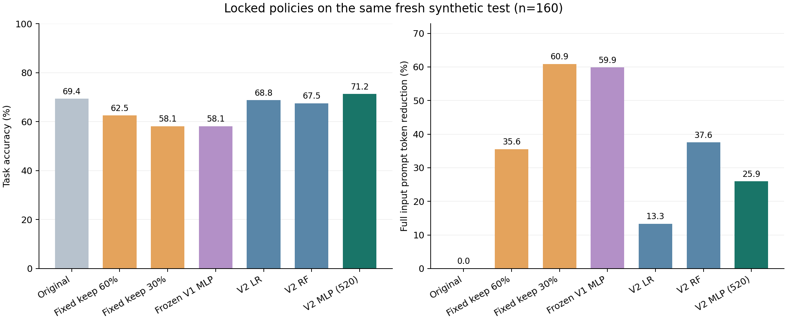
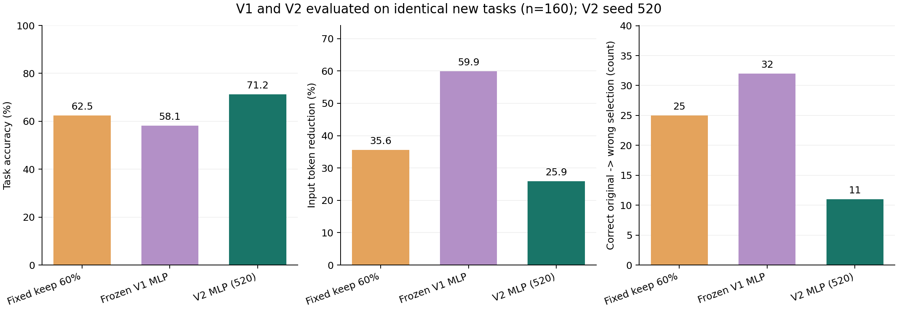
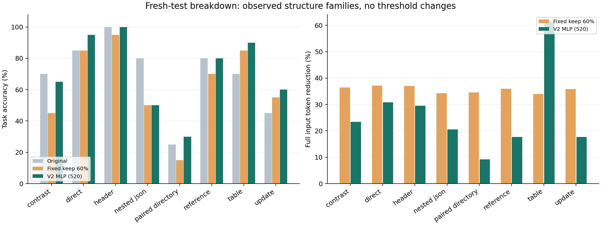

CacheScope V2 实验结果
主模型固定为 seed 520 的 MLP。本次在 160 个新测试任务、32 个模板组上评估；所有模型和门槛在读取测试观测前已冻结。
尚未同时达到预先设定的三项主模型条件。实测准确率 71.25%，输入 token 节省 25.94%，11 个任务由原本正确变为答错（占全部任务 6.88%）。
这次改了什么
研究问题仍是：在回答模型运行前，用轻量风险模型决定是否接受固定压缩器的输出。压缩器仍产生保留60%与30%上下文的两档候选；门控选择通过门槛的最短候选，否则保留原文。V2 使用 38 维回答前特征，增加与问题相关的证据保留信息，并扩充训练数据中的结构和长度。没有用参考答案、实际回答或正确性标签作为推断特征。
训练集有 720 条任务记录，新的验证集有 80 条任务，新测试集有 160 条任务。全部旧V1测试、结构留出和长度压力数据现已归入开发数据；旧数据上的表现不能作为V2的独立验证。旧长度派生记录也不能按新增独立来源计算。
验证集负责早停和门槛选择：在经验有害接受比例≤2.5%、准确率相对原文下降≤2.5个百分点的约束下，最大化输入token节省。该经验约束不保证新测试集达到同样水平。主种子520预先固定；521、522只用于报告稳定性。
同一批新测试任务上的完整对照
token节省按完整输入提示词的实际token总量计算；原本答错的任务仍计入策略准确率。表中“原本正确→答错”是压缩造成的观测退化，“原本答错→正确”是采用压缩后观测到的改善。两者相抵后的准确率变化不能代替有害接受数量。

同一新测试集的策略准确率和输入token节省
V1 与 V2：使用同一新测试集比较
冻结V1模型在这 160 个新任务上的准确率为 58.13%、输入token节省为 59.88%、有害接受 32 次。V2主MLP对应为 71.25%、25.94%、11 次。V2相对该V1的准确率变化为 +13.12个百分点，token节省变化为 -33.94个百分点。
固定保留60%策略的准确率为 62.50%、输入token节省为 35.57%、有害接受 25 次。V2主MLP相对它的准确率变化为 +8.75个百分点，token节省变化为 -9.63个百分点。节省比例不相等时，应同时比较准确率与token，不能直接解释为完全相同预算下的因果优势。
这里没有拿V1旧100题的准确率与V2新测试准确率直接比较；三个策略均运行于同一批已冻结的新任务。V1在这里保留旧权重、旧特征定义和旧门槛，不重新调参。

固定压缩、冻结V1与V2在相同新任务上的比较
预定目标与不确定性
主MLP相对原文的准确率变化为 +1.88个百分点，按模板组重采样的95%区间为 [-5.63, +10.00] 个百分点；输入token节省的95%区间为 [20.07%, 32.64%]。区间反映这批合成模板任务的不确定性，不代表真实用户总体或其他回答模型。
McNemar列使用逐任务精确二项检验，没有校正模板内相关性；优先结合模板组bootstrap区间理解。以上比较均如实报告，不用测试结果更换模型、门槛或主种子；也没有针对多重比较做校正。
MLP、传统模型、特征消融与种子稳定性
Random Forest准确率为 67.50%、token节省为 37.57%、有害接受 16 次；主MLP对应为 71.25%、25.94%、11 次。该结果应按实际取舍解读，不能因为课程包含深度学习就声称神经网络一定优于传统模型。
保持V2扩展开发数据、改回V1旧20维特征后，MLP准确率为 68.12%、token节省为 20.68%、有害接受 14 次。这个消融使用同样的数据、架构、主种子和验证规则，但各自选择验证门槛，因此它比较整个特征加门槛方案，不能证明某单一特征的独立因果作用。
三个预定种子520/521/522的准确率均值为 70.83%，样本标准差为 0.72 个百分点；token节省均值为 27.28%，样本标准差为 1.65 个百分点。三个种子的单独结果均在上表，主结果始终使用520。
风险分类只在原文回答正确的候选上定义“压缩导致退化”；模型输出是该条件下学到的风险排序分数，不是对任意请求都已校准的绝对失败概率。策略表仍保留全部任务。
长度与结构表现

新测试集按结构分类的准确率与token节省
八种高层结构在开发数据中都出现过，新的测试任务与模板组独立。因此本次检验的是已见结构下的新来源、新措辞及不同长度任务，不能声称已经解决完全新结构的分布外泛化。较长文本的400-token分层也不等于真实长文档基准。
审计状态与复现材料
独立审计JSON
完整真实指标JSON
测试前冻结的模型／门槛与哈希
策略结果CSV
逐任务策略决策
本项目数据与代码生成使用了AI辅助。数据为人为设定事实的合成任务；标签来自实际本地回答模型输出与预定答案的匹配。结果只支持这套任务、压缩器和回答模型的观测结论。它不直接证明真实文档、其他语言、其他大模型、API费用或端到端延迟上的收益。
这轮真正改善了什么 · 真实失败与改善案例